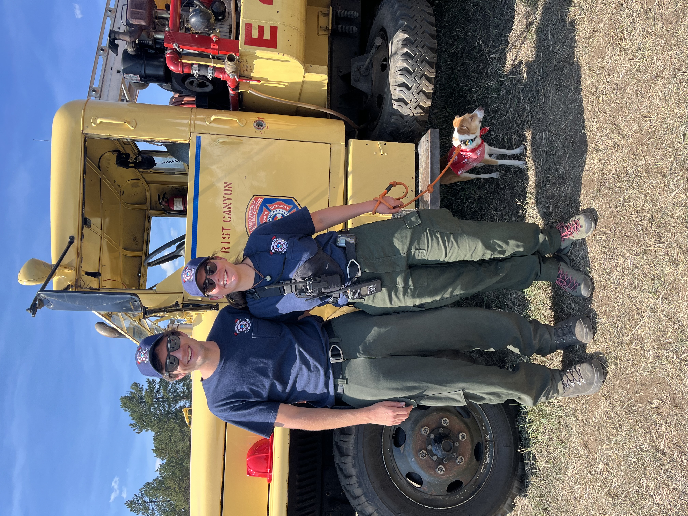
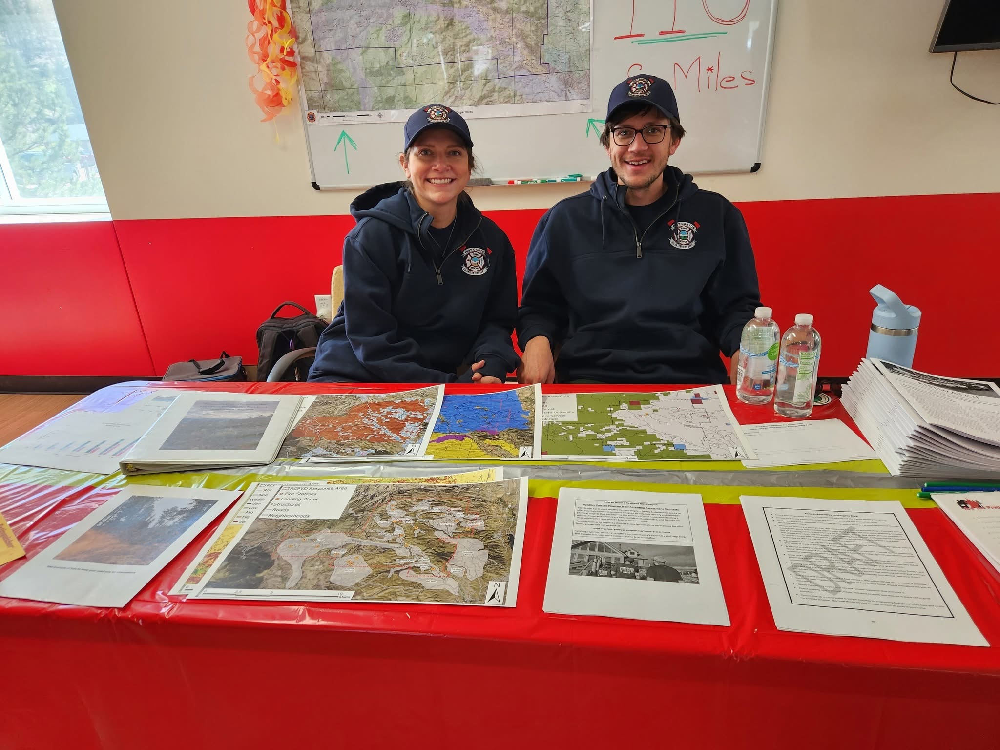

Wildland Firefighter
I serve as a wildland firefighter, supporting emergency response and helping protect people, property, and surrounding landscapes during wildfire incidents.
Beyond my scientific work, I serve my mountain community as a wildland firefighter and volunteer in roles that combine emergency response, local leadership, planning, and mapping.

Community profile
Emergency response, grants, mountain festival coordination, and operational mapping.
My life outside of work is rooted in community service and wildland fire. I serve as a wildland firefighter and contribute to several volunteer efforts that support local emergency response, planning, funding, and public events.
These roles let me combine practical field experience with skills I already care deeply about: organization, spatial thinking, problem-solving, and working with people under real-world constraints. Whether the task is preparing for fire season, coordinating firefighters during a mountain festival, reviewing grant needs, or improving maps, the goal is the same: make the community safer and more prepared.
I serve as a wildland firefighter, supporting emergency response and helping protect people, property, and surrounding landscapes during wildfire incidents.
I serve on the grants committee, helping support funding efforts for equipment, preparedness, training, and other community or fire-service needs.
During our mountain festival, I help organize firefighters and coordinate coverage so emergency-response resources are positioned and ready while the community gathers.
I serve on the mapping task force, bringing geospatial thinking into local preparedness and response through clearer, more useful maps and spatial information.
As a member of the Rist Canyon Volunteer Fire Department Grants Committee, I contribute to grant efforts that support firefighter safety, emergency medical response, wildland fire operations, and community preparedness. The funded awards below represent collaborative committee work and are separate from my research funding.

The most useful map is not the most complicated one. It is the one that helps someone make a better decision when it matters.
// mapping + field experience + community context
Think through staffing, locations, likely needs, and how firefighters will be organized during the festival.
Help align people, equipment, maps, and communication so everyone knows the operational picture.
Keep firefighter coverage organized while the community event is active and conditions are changing.
Carry lessons forward into future coordination, preparedness, grant needs, and mapping efforts.
I care about being useful where I live.
Firefighting, grant work, event coordination, and mapping all give me different ways to contribute to a resilient mountain community.